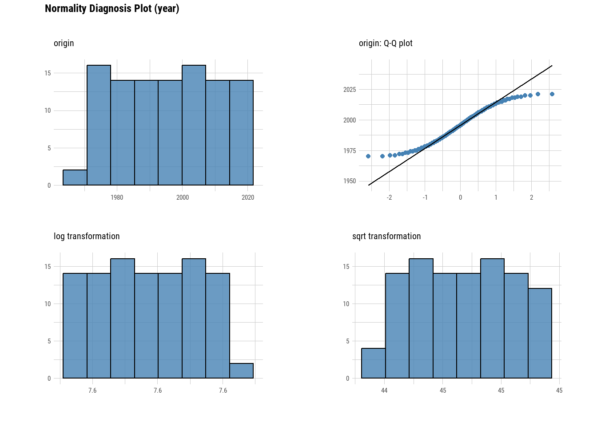
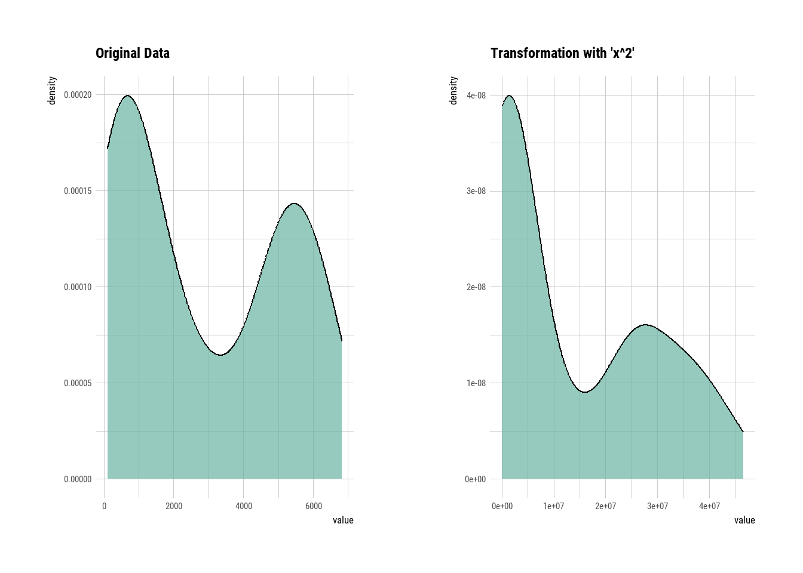
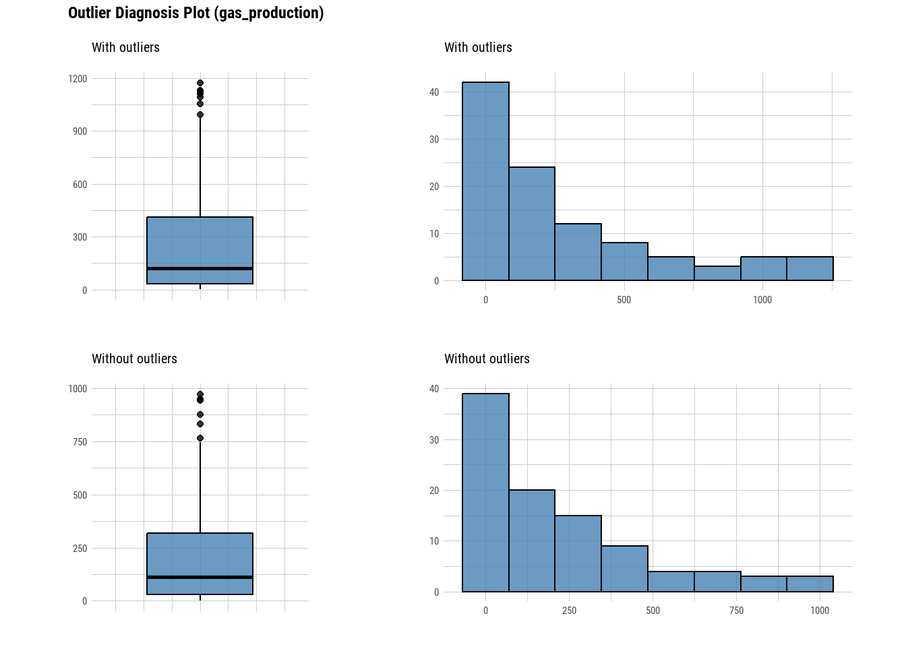

##############################################################
# PART I: Transforming like a Data... Transformer
##############################################################
##############################################################
# If I want to make the oil_production more discrete then I
# wonder if there's a way to convert this into barrels of oil...
##############################################################
# Sets the number of significant figures to two - e.g., 0.01
options(digits = 2)
# Required package for quick package downloading and loading
if (!require(pacman))
install.packages("pacman")Loading required package: pacman# Downloads and load required packages
pacman::p_load(dlookr, # Exploratory data analysis
forecast, # Needed for Box-Cox transformations
formattable, # HTML tables from R outputs
here, # Standardizes paths to data
kableExtra, # Alternative to formattable
knitr, # Needed to write HTML reports
missRanger, # To generate NAs
tidyverse) # Powerful data wrangling package suite
########################################################
# Load my data set.
#
# I was originally going to use scurvy but will instead
# use owid-energy.csv.
#
# Some contenders:
#
# dataset <- read_csv(here('daily_summary.csv'))
# dataset <- read_csv(here('population.csv'))
#
# source: https://github.com/rfordatascience/tidytuesday/tree/master/data/2023/2023-08-22
########################################################
dataset <- read_csv(here('owid-energy.csv'))Rows: 21891 Columns: 129── Column specification ────────────────────────────────────────────────────────
Delimiter: ","
chr (2): country, iso_code
dbl (127): year, population, gdp, biofuel_cons_change_pct, biofuel_cons_chan...
ℹ Use `spec()` to retrieve the full column specification for this data.
ℹ Specify the column types or set `show_col_types = FALSE` to quiet this message.saudi_and_brazil <- dataset %>%
filter(iso_code %in% c("SAU", "BRA")) %>%
filter(year >= 1970) %>%
select(country, iso_code, year, gdp, population, gas_production, oil_production)
# filter(country %in% c("Brazil", "saudia arabia", "Panama")) %>%
# filter(country == "Brazil & Saudia Arabia" & year >= 1950)
# filter(iso_code %in% c("SAU")) %>%
# filter(iso_code %in% c("BRA")) %>%
saudi_and_brazil# A tibble: 104 × 7
country iso_code year gdp population gas_production oil_production
<chr> <chr> <dbl> <dbl> <dbl> <dbl> <dbl>
1 Brazil BRA 1970 443497000000 96369888 0.811 102.
2 Brazil BRA 1971 493683000000 98766288 1.29 107.
3 Brazil BRA 1972 552790000000 101194392 1.75 105.
4 Brazil BRA 1973 629980000000 103666904 2.01 106.
5 Brazil BRA 1974 681264000000 106167376 3.86 111.
6 Brazil BRA 1975 716642000000 108700512 4.21 108.
7 Brazil BRA 1976 790038000000 111286504 4.85 105.
8 Brazil BRA 1977 828975000000 113939888 6.03 102.
9 Brazil BRA 1978 870262000000 116664384 7.94 101.
10 Brazil BRA 1979 929101000000 119447304 8.70 105.
# ℹ 94 more rowssaudi_and_brazil |>
head() |>
formattable()| country | iso_code | year | gdp | population | gas_production | oil_production |
|---|---|---|---|---|---|---|
| Brazil | BRA | 1970 | 4.4e+11 | 9.6e+07 | 0.81 | 102 |
| Brazil | BRA | 1971 | 4.9e+11 | 9.9e+07 | 1.29 | 107 |
| Brazil | BRA | 1972 | 5.5e+11 | 1.0e+08 | 1.75 | 105 |
| Brazil | BRA | 1973 | 6.3e+11 | 1.0e+08 | 2.01 | 106 |
| Brazil | BRA | 1974 | 6.8e+11 | 1.1e+08 | 3.86 | 111 |
| Brazil | BRA | 1975 | 7.2e+11 | 1.1e+08 | 4.21 | 108 |
# The "describe" feature below will summarized all of the
# columns into quick, summary stats. Very useful, I think.
saudi_and_brazil |>
select(oil_production, gas_production, gdp) |>
describe() |>
select(described_variables, mean, skewness, n, na) |>
formattable()| described_variables | mean | skewness | n | na |
|---|---|---|---|---|
| oil_production | 2.8e+03 | 0.27 | 104 | 0 |
| gas_production | 2.8e+02 | 1.35 | 104 | 0 |
| gdp | 1.1e+12 | 0.88 | 98 | 6 |
# These plots don't really help me with my EDA. The only
# meaningful plots are for the oil and gas production, but
# the data is skewed from the linear line in the Q-Q plots.
saudi_and_brazil |>
plot_normality()


# This "group_by" feature works great for my data.
saudi_and_brazil %>%
group_by(country) %>%
select(oil_production, gas_production, gdp) %>%
plot_normality()Adding missing grouping variables: `country`


# Gas production is skewed more to the right (1.78)
# than oil production (0.75).
saudi_and_brazil |>
select(oil_production, gas_production, gdp) |>
describe() |>
select(described_variables, mean, IQR, skewness) |>
formattable()| described_variables | mean | IQR | skewness |
|---|---|---|---|
| oil_production | 2.8e+03 | 4.6e+03 | 0.27 |
| gas_production | 2.8e+02 | 3.8e+02 | 1.35 |
| gdp | 1.1e+12 | 1.3e+12 | 0.88 |
saudi_and_brazil |>
plot_normality(oil_production, gas_production)

# This is good if I can create two datasets for Brazil and S.A. and
# run them seperately and then quickly look at visual representations
# for GDP, oil and gas production, etc., then quickly make a comparison
# between the two countries then go further in-depth and perform
# additional analysis.
saudi_and_brazil %>%
# This "group_by" function below works better for me!!!
# So, group_by is meant more so for ordinaldata, which the only
# piece of ordinal data I have is for "iso_code." But it would be better
# for me to use the "group_by" because I can simply up Brazil & S.A.
# without having to create two separate datasets and then run
# plot_normality.
group_by(iso_code) %>%
select(oil_production, gas_production) %>%
plot_normality()Adding missing grouping variables: `iso_code`
filtered_column <- saudi_and_brazil |>
filter(oil_production > 0)
filtered_column# A tibble: 104 × 7
country iso_code year gdp population gas_production oil_production
<chr> <chr> <dbl> <dbl> <dbl> <dbl> <dbl>
1 Brazil BRA 1970 443497000000 96369888 0.811 102.
2 Brazil BRA 1971 493683000000 98766288 1.29 107.
3 Brazil BRA 1972 552790000000 101194392 1.75 105.
4 Brazil BRA 1973 629980000000 103666904 2.01 106.
5 Brazil BRA 1974 681264000000 106167376 3.86 111.
6 Brazil BRA 1975 716642000000 108700512 4.21 108.
7 Brazil BRA 1976 790038000000 111286504 4.85 105.
8 Brazil BRA 1977 828975000000 113939888 6.03 102.
9 Brazil BRA 1978 870262000000 116664384 7.94 101.
10 Brazil BRA 1979 929101000000 119447304 8.70 105.
# ℹ 94 more rows# This is a quick way to just filtered all the data based on one column,
# in this case, oil_prodution, which I'm telling R to show me all data
# > 0 for oil_production, which begins in 1942 for Brazil and 1936 for
# S.A., which makes me wonder if WWII had anything to do with Brazil
# beginning its production of oil and if so, who was Brazil supplying
# oil to?
######################################################################
# The next EDA exercises will have us look at:
# sqrt
# log+1
# 1/x (inverse)
# x^2
# x^3
# I'm re-adding the function for saudi_and_brazil so that I can toggle
# between displaying data for SAU and BRA.
saudi_and_brazil %>%
filter(iso_code %in% c("SAU"))# A tibble: 52 × 7
country iso_code year gdp population gas_production oil_production
<chr> <chr> <dbl> <dbl> <dbl> <dbl> <dbl>
1 Saudi Arabia SAU 1970 7.42e10 6106192 15.4 2235.
2 Saudi Arabia SAU 1971 8.49e10 6396665 12.8 2800.
3 Saudi Arabia SAU 1972 9.80e10 6724259 14.5 3538.
4 Saudi Arabia SAU 1973 1.17e11 7088765 17.1 4466.
5 Saudi Arabia SAU 1974 1.35e11 7483511 21.6 4997.
6 Saudi Arabia SAU 1975 1.35e11 7897541 25.7 4179.
7 Saudi Arabia SAU 1976 1.47e11 8319558 27.8 5085.
8 Saudi Arabia SAU 1977 1.69e11 8755223 39.1 5447.
9 Saudi Arabia SAU 1978 1.79e11 9210568 53.9 4936.
10 Saudi Arabia SAU 1979 1.91e11 9682002 66.2 5676.
# ℹ 42 more rowssaudi_and_brazil# A tibble: 104 × 7
country iso_code year gdp population gas_production oil_production
<chr> <chr> <dbl> <dbl> <dbl> <dbl> <dbl>
1 Brazil BRA 1970 443497000000 96369888 0.811 102.
2 Brazil BRA 1971 493683000000 98766288 1.29 107.
3 Brazil BRA 1972 552790000000 101194392 1.75 105.
4 Brazil BRA 1973 629980000000 103666904 2.01 106.
5 Brazil BRA 1974 681264000000 106167376 3.86 111.
6 Brazil BRA 1975 716642000000 108700512 4.21 108.
7 Brazil BRA 1976 790038000000 111286504 4.85 105.
8 Brazil BRA 1977 828975000000 113939888 6.03 102.
9 Brazil BRA 1978 870262000000 116664384 7.94 101.
10 Brazil BRA 1979 929101000000 119447304 8.70 105.
# ℹ 94 more rowssqrt_prod_data <-
transform(saudi_and_brazil$oil_production, method = "sqrt")
# sqrtIns <- transform(saudi_and_brazil$gas_production, method = "sqrt")
summary(sqrt_prod_data)* Resolving Skewness with sqrt
* Information of Transformation (before vs after)
Original Transformation
n 104.00 104.000
na 0.00 0.000
mean 2833.00 47.038
sd 2346.55 25.030
se_mean 230.10 2.454
IQR 4610.48 49.446
skewness 0.27 -0.077
kurtosis -1.58 -1.540
p00 101.05 10.052
p01 101.64 10.082
p05 105.61 10.277
p10 120.70 10.979
p20 395.06 19.876
p25 480.04 21.902
p30 813.09 28.514
p40 1300.06 36.056
p50 1927.19 43.892
p60 3872.72 62.216
p70 4998.68 70.701
p75 5090.52 71.348
p80 5368.64 73.271
p90 6002.79 77.478
p95 6378.07 79.863
p99 6705.32 81.886
p100 6823.46 82.604sqrt_prod_data |>
plot()Log1_prod_data <-
transform(saudi_and_brazil$oil_production, method = "log+1")
summary(Log1_prod_data)* Resolving Skewness with log+1
* Information of Transformation (before vs after)
Original Transformation
n 104.00 104.00
na 0.00 0.00
mean 2833.00 7.31
sd 2346.55 1.37
se_mean 230.10 0.13
IQR 4610.48 2.36
skewness 0.27 -0.68
kurtosis -1.58 -0.83
p00 101.05 4.63
p01 101.64 4.63
p05 105.61 4.67
p10 120.70 4.80
p20 395.06 5.98
p25 480.04 6.17
p30 813.09 6.70
p40 1300.06 7.17
p50 1927.19 7.56
p60 3872.72 8.26
p70 4998.68 8.52
p75 5090.52 8.54
p80 5368.64 8.59
p90 6002.79 8.70
p95 6378.07 8.76
p99 6705.32 8.81
p100 6823.46 8.83# This is for “1/x”: inverse transformation. 1/x, the severe skew,
# which produces values of infinity and therefore doesn't produce
# a plot for my variable Inv_prod_data.
Inv_prod_data <-
transform(saudi_and_brazil$oil_production, method = "1/x")
summary(Inv_prod_data)* Resolving Skewness with 1/x
* Information of Transformation (before vs after)
Original Transformation
n 104.00 1.0e+02
na 0.00 0.0e+00
mean 2833.00 1.8e-03
sd 2346.55 2.9e-03
se_mean 230.10 2.8e-04
IQR 4610.48 1.9e-03
skewness 0.27 2.0e+00
kurtosis -1.58 2.6e+00
p00 101.05 1.5e-04
p01 101.64 1.5e-04
p05 105.61 1.6e-04
p10 120.70 1.7e-04
p20 395.06 1.9e-04
p25 480.04 2.0e-04
p30 813.09 2.0e-04
p40 1300.06 2.6e-04
p50 1927.19 5.2e-04
p60 3872.72 7.7e-04
p70 4998.68 1.2e-03
p75 5090.52 2.1e-03
p80 5368.64 2.5e-03
p90 6002.79 8.3e-03
p95 6378.07 9.5e-03
p99 6705.32 9.8e-03
p100 6823.46 9.9e-03Inv_prod_data |>
plot()# This is for “x^2”: squared transformation.
Sqrd_prod_data <-
transform(saudi_and_brazil$oil_production, method = "x^2")
summary(Sqrd_prod_data)* Resolving Skewness with x^2
* Information of Transformation (before vs after)
Original Transformation
n 104.00 1.0e+02
na 0.00 0.0e+00
mean 2833.00 1.3e+07
sd 2346.55 1.5e+07
se_mean 230.10 1.5e+06
IQR 4610.48 2.6e+07
skewness 0.27 6.7e-01
kurtosis -1.58 -1.1e+00
p00 101.05 1.0e+04
p01 101.64 1.0e+04
p05 105.61 1.1e+04
p10 120.70 1.5e+04
p20 395.06 1.6e+05
p25 480.04 2.3e+05
p30 813.09 6.6e+05
p40 1300.06 1.7e+06
p50 1927.19 3.7e+06
p60 3872.72 1.5e+07
p70 4998.68 2.5e+07
p75 5090.52 2.6e+07
p80 5368.64 2.9e+07
p90 6002.79 3.6e+07
p95 6378.07 4.1e+07
p99 6705.32 4.5e+07
p100 6823.46 4.7e+07Sqrd_prod_data |>
plot()
# This is for "x^3": cubed transformation.
Cube_prod_data <-
transform(saudi_and_brazil$oil_production, method = "x^3")
summary(Cube_prod_data)* Resolving Skewness with x^3
* Information of Transformation (before vs after)
Original Transformation
n 104.00 1.0e+02
na 0.00 0.0e+00
mean 2833.00 7.2e+10
sd 2346.55 9.3e+10
se_mean 230.10 9.1e+09
IQR 4610.48 1.3e+11
skewness 0.27 1.0e+00
kurtosis -1.58 -3.1e-01
p00 101.05 1.0e+06
p01 101.64 1.0e+06
p05 105.61 1.2e+06
p10 120.70 1.8e+06
p20 395.06 6.2e+07
p25 480.04 1.1e+08
p30 813.09 5.4e+08
p40 1300.06 2.2e+09
p50 1927.19 7.2e+09
p60 3872.72 5.8e+10
p70 4998.68 1.2e+11
p75 5090.52 1.3e+11
p80 5368.64 1.5e+11
p90 6002.79 2.2e+11
p95 6378.07 2.6e+11
p99 6705.32 3.0e+11
p100 6823.46 3.2e+11Cube_prod_data |>
plot()# This is for the Box-Cox transformation:
BoxCox_prod_data <-
transform(saudi_and_brazil$oil_production, method = "Box-Cox")
summary(BoxCox_prod_data)* Resolving Skewness with Box-Cox
* Information of Transformation (before vs after)
Original Transformation
n 104.00 104.000
na 0.00 0.000
mean 2833.00 5.501
sd 2346.55 0.801
se_mean 230.10 0.079
IQR 4610.48 1.318
skewness 0.27 -0.800
kurtosis -1.58 -0.604
p00 101.05 3.863
p01 101.64 3.867
p05 105.61 3.894
p10 120.70 3.983
p20 395.06 4.758
p25 480.04 4.877
p30 813.09 5.194
p40 1300.06 5.464
p50 1927.19 5.683
p60 3872.72 6.055
p70 4998.68 6.186
p75 5090.52 6.195
p80 5368.64 6.222
p90 6002.79 6.278
p95 6378.07 6.309
p99 6705.32 6.334
p100 6823.46 6.342BoxCox_prod_data |>
plot()# This function/code doesn't work so I'm going to hide it:
#
# transformation_web_report(saudi_and_brazil)
# transformation_web_report(dataset)
##############################################################
# PART II: Imputing like a Data Scientist
##############################################################
# I could create a categorical group based on the data in the
# GDP or population column, something along the lines of:
#
# 1.) Very Wealthy
# 2.) Middle-class
# 3.) Poor
# saudi_and_brazil |>
# Add a categorical group. There are 10, 11, 12 0's.
# mutate(Wealth_of_country = ifelse(gdp >=e+11, "Poor class",
# ifelse(gdp > e+11 & Age <= e+12, "Middle class",
# ifelse(gdp >= e+12, "Upper class")),
# gdp = fct_rev(gdp))
# This is a great and simply dlookr function to run. It shows these
# six classes:
# variables (names of the columns)
# types (are the variables charcter or numeric, etc.)
# missing_count (I think these are the NAs)
# missing_percent (same as above, but percentage)
# unique_count
# unique_rate
#
# I can immediately spot that I have missing data
# for GDP.
#
saudi_and_brazil |>
diagnose() |>
formattable()| variables | types | missing_count | missing_percent | unique_count | unique_rate |
|---|---|---|---|---|---|
| country | character | 0 | 0.0 | 2 | 0.019 |
| iso_code | character | 0 | 0.0 | 2 | 0.019 |
| year | numeric | 0 | 0.0 | 52 | 0.500 |
| gdp | numeric | 6 | 5.8 | 99 | 0.952 |
| population | numeric | 0 | 0.0 | 104 | 1.000 |
| gas_production | numeric | 0 | 0.0 | 104 | 1.000 |
| oil_production | numeric | 0 | 0.0 | 104 | 1.000 |
# These are the graphs to show outliers, which helps understand
# the table below.
saudi_and_brazil |>
select(find_outliers(saudi_and_brazil)) |>
plot_outlier()
# Table showing outliers
saudi_and_brazil |>
diagnose_outlier() |>
filter(outliers_ratio > 0) |>
mutate(rate = outliers_mean / with_mean) |>
arrange(desc(rate)) |>
select(-outliers_cnt) |>
formattable()| variables | outliers_ratio | outliers_mean | with_mean | without_mean | rate |
|---|---|---|---|---|---|
| gas_production | 6.7 | 1096 | 281 | 222 | 3.9 |